Tingwu Wang
Staff research scientist at Nvidia. Email = wilsonwanguoft @ .com
I am a staff research scientist in Nvidia's Generalist Embodied Agent Research (GEAR) team. Previously I obtained my PhD in University of Toronto, proudly advised by Prof. Sanja Fidler and Prof. Jimmy Ba. My name is pronounced as Ting-Wu, and it means "midday" in Chinese.
My research experience ranges widely from developing animation motion engines to deploying real robots. Since my PhD, I have been dedicated to exploring a central theme: creating scalable, robust, and generalist motion skills that seamlessly bridge the virtual and real worlds.
Education
-
PhD in Computer Science @ University of Toronto Jan. 2018 - June. 2022Toronto, Ontario, Canada Advisor: Prof. Sanja Fidler and Prof. Jimmy Ba
-
MSc in Computer Science @ University of Toronto Aug. 2016 - Jan. 2018Toronto, Ontario, Canada, GPA: 4.0/4.0 Advisor: Prof. Sanja Fidler
-
BSc in Electronic Engineering @ Tsinghua University Sep. 2012 - Jun. 2016Beijing, P. R. China Advisor: Prof. Xing Li
-
Visitor in Electronic Information @ Technischen Universität München Sep. 2014 - Feb. 2015Munich, Bavaria, Germany
Publications and Patents
* equal contribution.Kimodo: Scaling Controllable Human Motion Generation
Technical Report, 2026
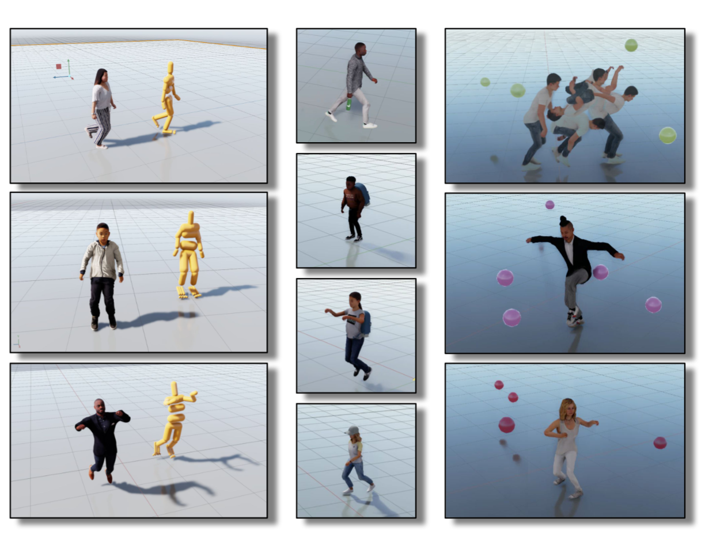
Learning Scalable Physics-based Motion Skills with Reinforcement Learning
PhD Thesis, 2022
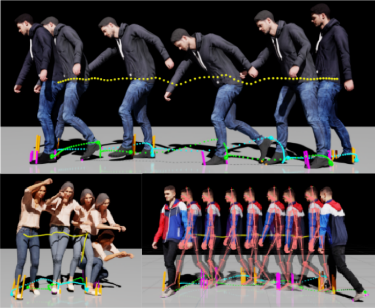
Physics-based Human Motion Estimation and Synthesis from Videos
International Conference on Computer Vision, ICCV, 2021
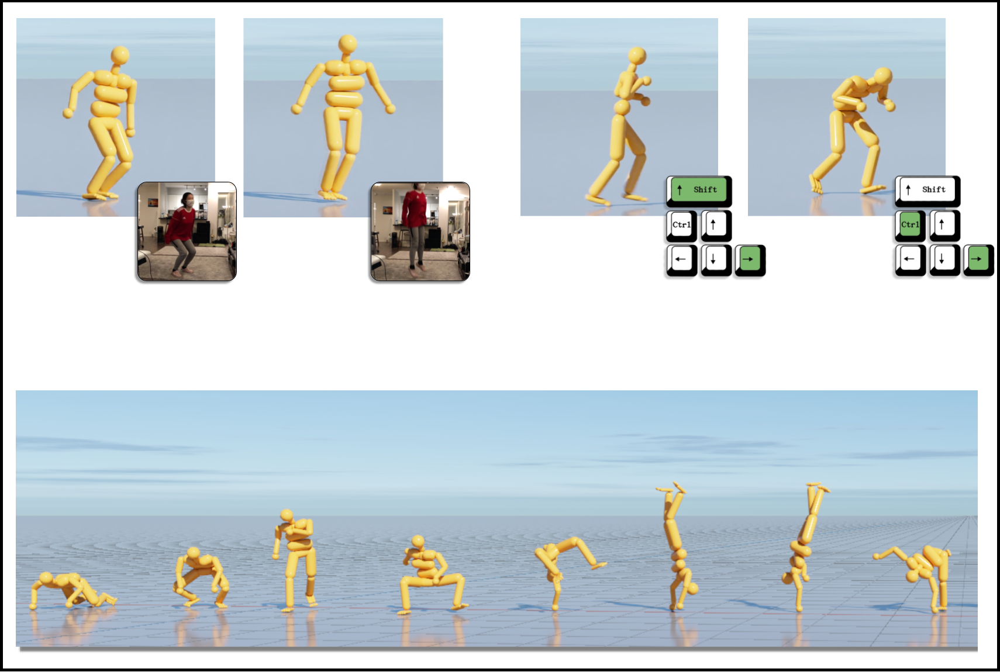
UniCon: Universal Neural Controller For Physics-based Character Motion
Arxiv, 2020
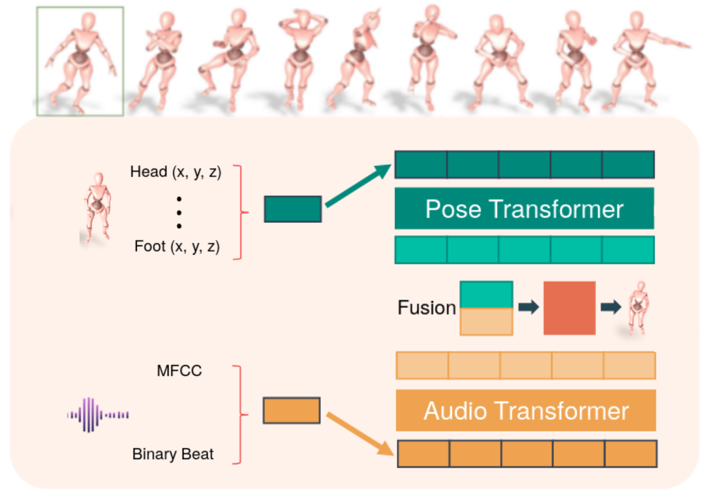
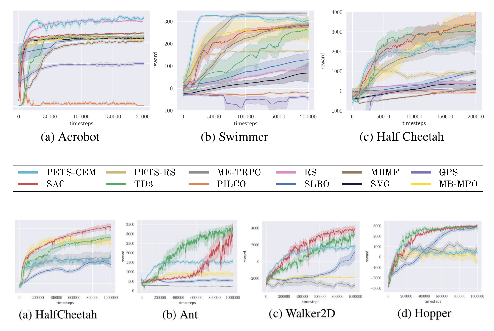
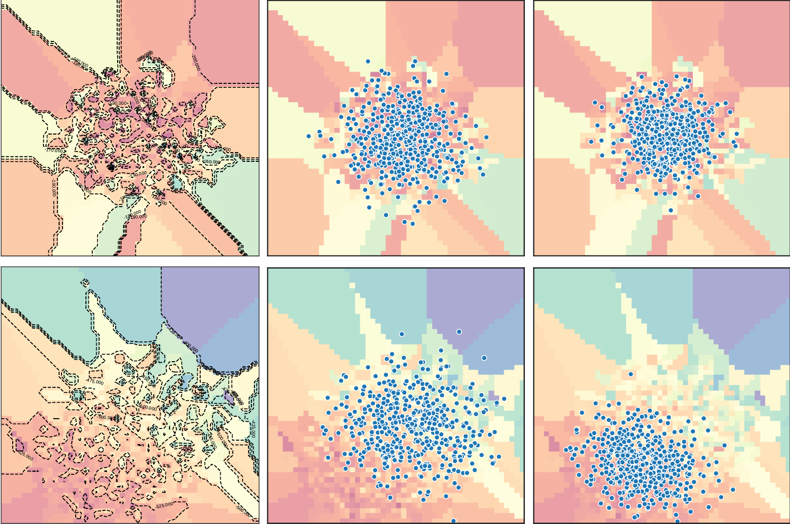
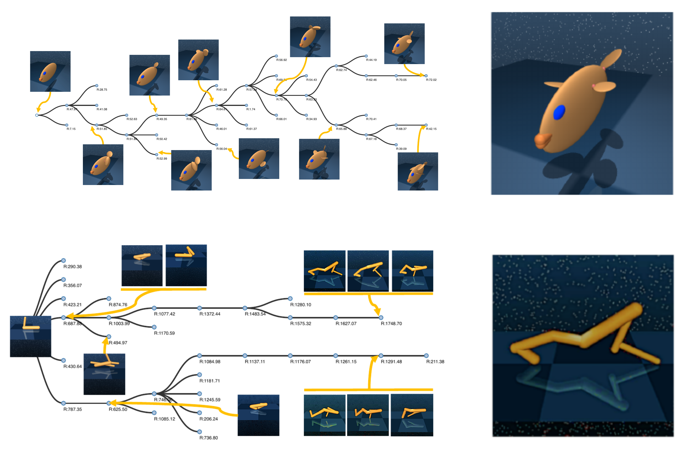
Neural Graph Evolution: Towards Efficient Automatic Robot Design
7th International Conference on Learning Representations (ICLR), 2019
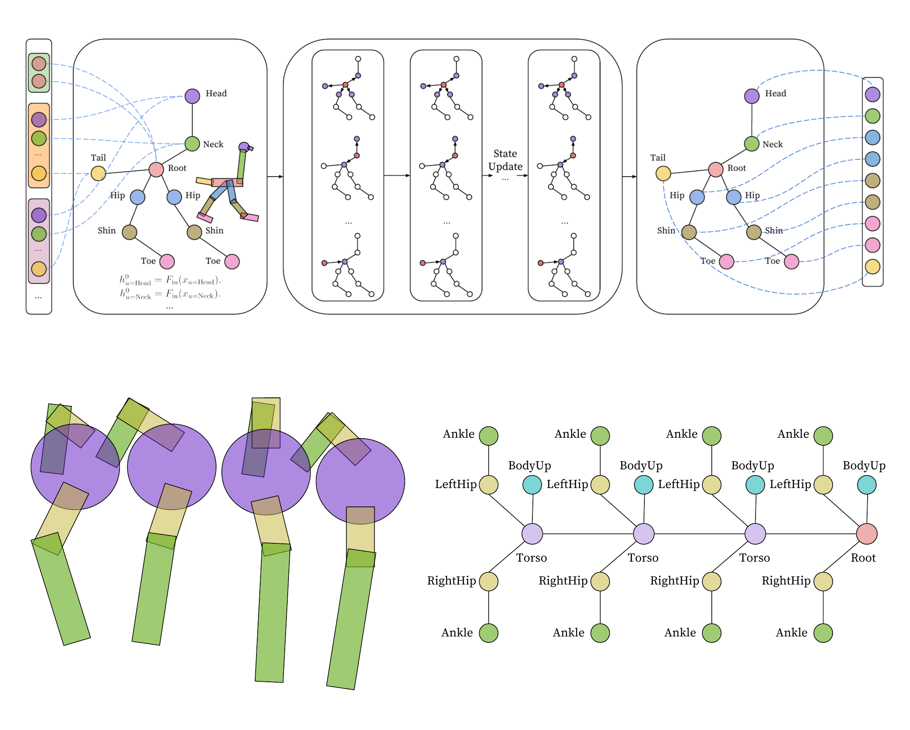
NerveNet: Learning Structured Policy with Graph Neural Networks
6th International Conference on Learning Representations (ICLR), 2018
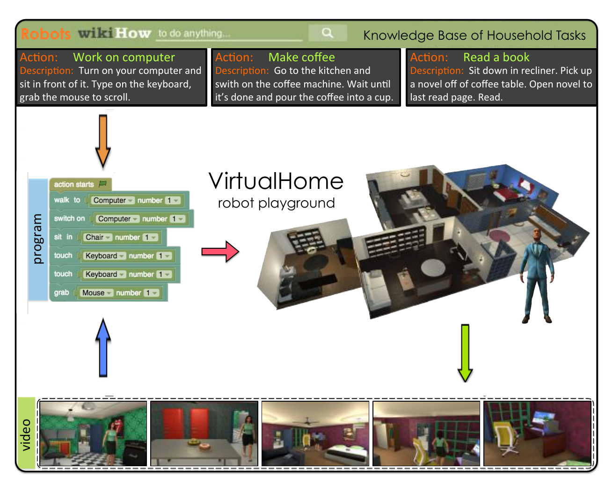
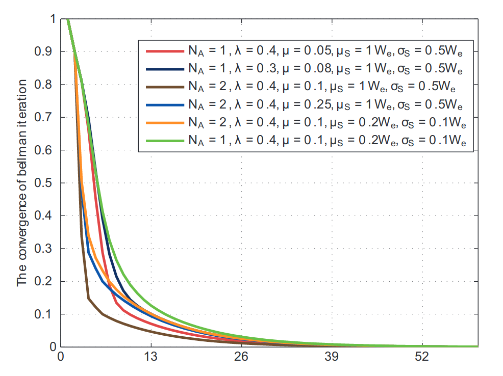
Access Points Selection in Super WiFi Network Powered by Solar Energy Harvesting
IEEE Wireless Communications and Networking Conference (WCNC), 2016
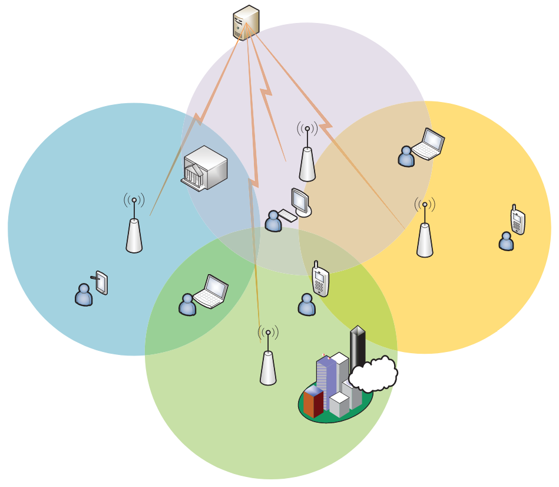
Access Strategy in Energy Harvesting Super WiFi Network: A POMDP Method
IEEE 83rd Vehicular Technology Conference (VTC), 2016
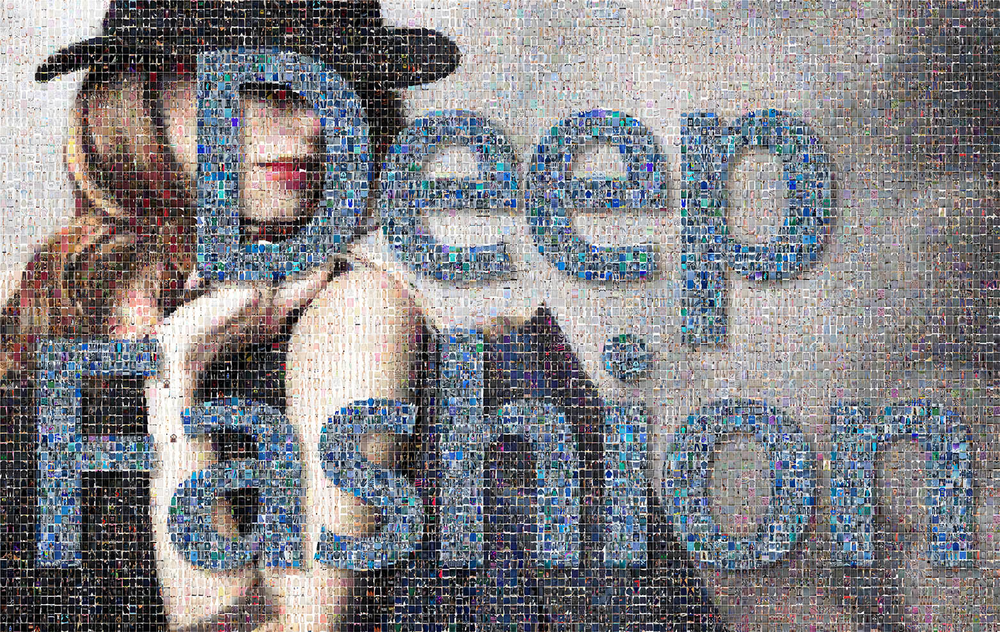
Costume Detection and Attribute Value Identification Method and System
Patent: CN105447529 A, 2016.
Work done as an intern in SenseTime. Contributions used in DeepFashion.
Teaching
-
Teaching Assistant, CSC 420: Introduction to Image Understanding Aug. 2016 - Dec. 2016
-
Teaching Assistant, CSC 320: Introduction to Visual Computing Jan. 2017 - Mar. 2017
-
Teaching Assistant, CSC 411: Introduction to Machine Learning Aug. 2017 - Jan. 2018
-
Teaching Assistant, CSC 411: Machine Learning and Data Mining Jan. 2018 - Mar. 2018
-
Teaching Assistant, CSC 2541: Topics in Machine Learning: Deep Reinforcement Learning Aug. 2018 - Jan. 2019
-
Teaching Assistant, CSC 2621: Topics in Robotics: Deep Reinforcement Learning Jan. 2020 - Mar. 2020
Tutorial
- Tutorial on Trust Region Policy Optimization
- Tutorial on model-based RL: A Step Closer to Model Based Reinforcement Learning
- Tutorial on Reinforcement Learning: Policy Gradient in CSC 411: Introduction to Machine Learning
- Tutorial on Reinforcement Learning: Q-Learning in CSC 411: Introduction to Machine Learning
- Tutorial on Semantic Segmentation in CSC 420: Introduction to Image Understanding
- Tutorial on Recurrent Neural Network in CSC2541: Sport Analytics
About Myself ( or Ting-Wu Wang)
I was born in Changsha. I was named by my grandfather, where "Ting-wu" means "the exact midday". The name comes from the Commentary on the Water Classic written by an ancient Chinese geographer called Li Daoyuan:
"To witness the Sun and the Moon, one shall wait until the exact midday or midnight."